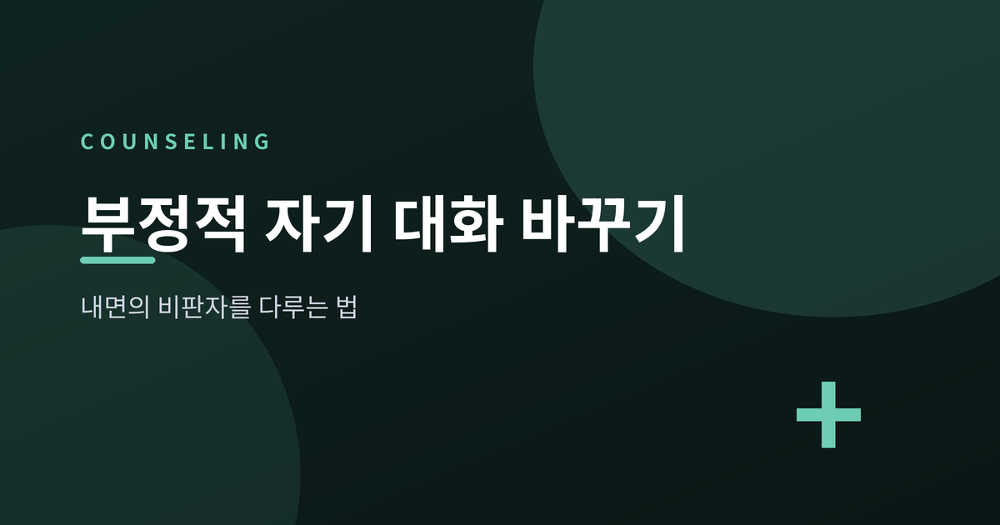
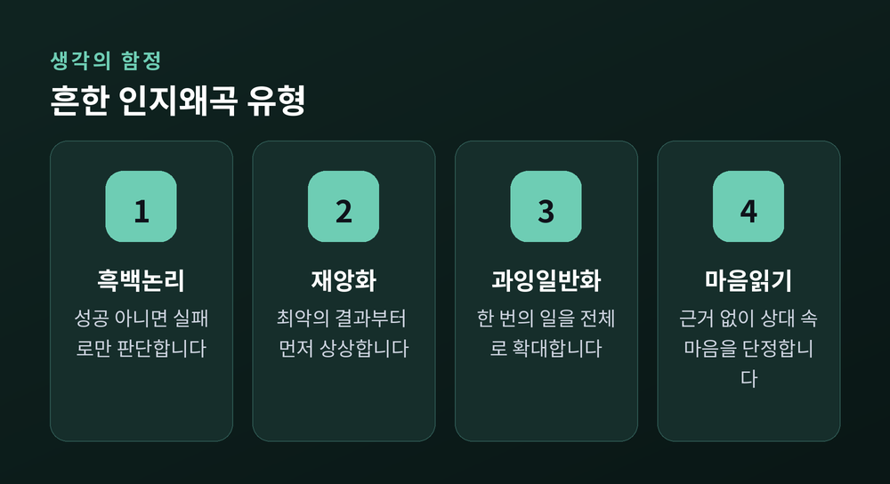
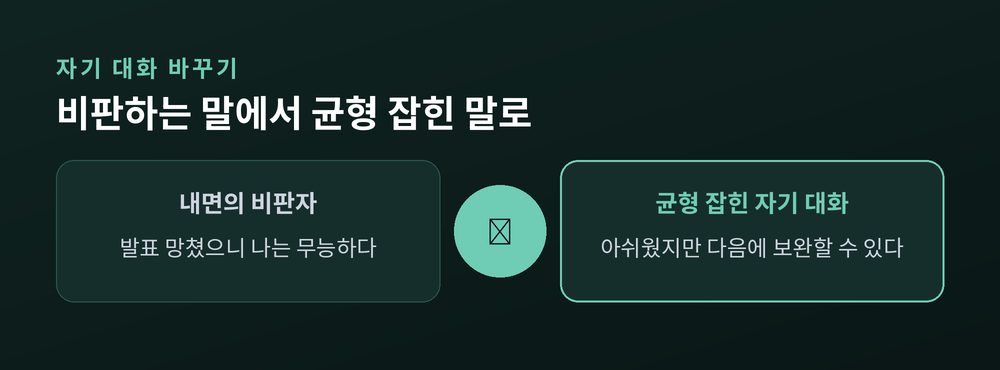
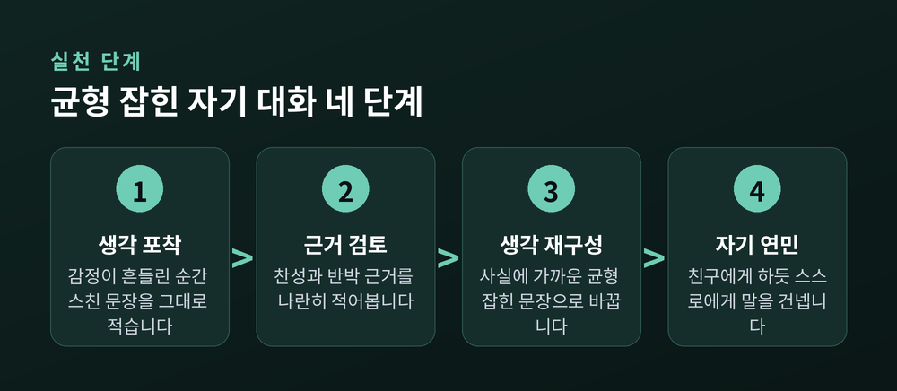

[상담] 부정적 자기 대화 바꾸기, 내면의 비판자 다루는 법

오늘은 부정적 셀프토크, 이른바 내면의 비판자를 다루는 법에 대해 이야기해 보려 합니다. 작은 실수에도 스스로를 몰아세우는 목소리, 누구나 한 번쯤은 겪어보셨을 것입니다. 이 글에서는 그 목소리가 왜 생기고 어떻게 다뤄야 하는지 정리해 보겠습니다.
3줄 요약
- 부정적 셀프토크(내면의 비판자)는 자존감과 기분을 갉아먹는 생각의 습관입니다.
- 흑백논리·재앙화 같은 인지왜곡을 알아차리는 것이 첫걸음입니다.
- 자기 연민과 균형 잡힌 자기 대화로 조율하되, 힘들면 전문 상담을 권합니다.
내면의 비판자, 왜 생기는 걸까요
살다 보면 유독 스스로에게 가혹해지는 순간이 있습니다. 발표를 마치고 나면 "역시 나는 부족해"라는 문장이 먼저 떠오르고, 사소한 실수 하나로 "나는 늘 이런 식이다"라는 결론에 이르기도 합니다. 이런 자동적인 생각의 흐름을 심리학에서는 내면의 비판자라고 부릅니다.
내면의 비판자는 원래 실수를 줄이고 나를 지키려는 동기에서 출발했다고 합니다. 문제는 그 목소리의 톤과 빈도입니다. 같은 실수를 해도 "누구나 그럴 수 있다"고 생각하는 사람과 "나는 무능하다"고 생각하는 사람은 뒤이어 따라오는 기분이 전혀 다릅니다. 사건 자체보다 그 사건을 해석하는 생각이 감정을 좌우한다는 것이 인지행동치료의 핵심 전제입니다.
이 생각이 반복되면 불안이나 위축된 감정으로 이어지고, 그 감정은 다시 회피나 미루는 행동으로 번집니다. 결과적으로 "역시 나는 안 된다"는 처음 생각이 맞았다고 착각하게 되는 악순환인 셈입니다. 예전엔 이런 목소리를 그냥 사실로 받아들였다면, 지금은 하나의 해석일 뿐이라고 거리를 두고 바라보는 태도가 권장됩니다.

인지왜곡 알아차리기 — 생각의 습관에 이름 붙이기
내면의 비판자는 몇 가지 정해진 화법을 반복해서 씁니다. 이를 인지왜곡이라고 합니다. 대표적으로 성공 아니면 실패로만 판단하는 흑백논리, 한두 번의 일을 전체로 확대하는 과잉일반화, 최악의 결과부터 상상하는 재앙화, 근거 없이 남의 생각을 단정하는 마음읽기 등이 있습니다.
이 유형들은 진단명이 아니라 알아차림을 위한 도구에 가깝습니다. 감정이 크게 흔들리는 순간, 그 직전에 스친 문장을 그대로 적어보시길 권합니다. 그리고 그 생각을 뒷받침하는 근거와 반박하는 근거를 나란히 적어보면, 생각이 얼마나 단정적이었는지 스스로 확인할 수 있습니다. "정말 매번 그랬는가", "다른 설명은 없는가"를 스스로에게 물어보는 것만으로도 생각과 거리가 생깁니다.
이렇게 이름을 붙이고 나면, 왜곡된 생각을 억지로 긍정으로 바꾸는 대신 사실에 더 가까운 문장으로 다시 써볼 수 있습니다. "발표를 망쳤으니 나는 무능하다" 대신 "아쉬운 부분이 있었지만 잘한 점도 있었고, 다음에 보완할 수 있다"처럼 표현을 조정해보는 것입니다.

자기 연민으로 균형 잡기
균형 잡힌 자기 대화에서 자주 쓰이는 질문이 하나 있습니다. "친한 친구가 똑같은 상황이라면 나는 뭐라고 말해줄까"라는 질문인데요. 유독 자신에게만 가혹한 기준을 적용하는 경우가 많기 때문에, 이 질문 하나만으로도 균형을 되찾는 데 도움이 됩니다.
심리학자 크리스틴 네프가 정리한 자기 연민 개념은 세 가지 요소로 이루어집니다. 실수했을 때 스스로에게 친절하게 대하는 자기 친절, 어려움은 나만 겪는 일이 아니라는 보편적 인간성, 그리고 감정을 억누르거나 과도하게 몰입하지 않고 있는 그대로 알아차리는 마음챙김입니다.
자기 연민이 자기 합리화로 이어지지 않을까 걱정하실 수도 있습니다. 하지만 자기 연민이 높은 사람일수록 책임감과 동기부여도 함께 유지되는 경향이 있다고 알려져 있습니다. 스스로를 몰아붙이지 않아도 성장에 대한 마음은 지킬 수 있는 것입니다. 다만 감정을 인정하는 것과 그 감정을 곱씹으며 강화하는 것은 다릅니다. 감정을 알아차린 뒤에는 균형 잡힌 관점으로 넘어가는 방향이 바람직합니다.

정리하면 이렇습니다. 내면의 비판자는 없애야 할 적이 아니라, 알아차리고 조율해야 할 습관입니다. 생각을 그대로 적어보고, 근거를 검토하고, 친구에게 하듯 말을 건네는 연습을 반복하다 보면 자기 대화의 톤은 조금씩 달라집니다.
다만 이런 방법들은 일상에서 시도해볼 수 있는 자기 관리 도구일 뿐, 전문적인 치료를 대체하지는 않습니다. 부정적인 생각이 오래 지속되거나 수면과 일상생활에 지장을 줄 정도로 힘드시다면, 전문 상담사나 정신건강의학과 전문의와 상담하시길 권합니다. 혼자 애쓰는 것보다 전문적인 도움을 받는 편이 더 안전하고 빠른 회복의 길이 될 수 있습니다.
"생각은 사실이 아니라 하나의 해석일 뿐이다" — 이 한 문장만 기억해도 내면의 비판자와 조금은 거리를 둘 수 있을 것입니다.